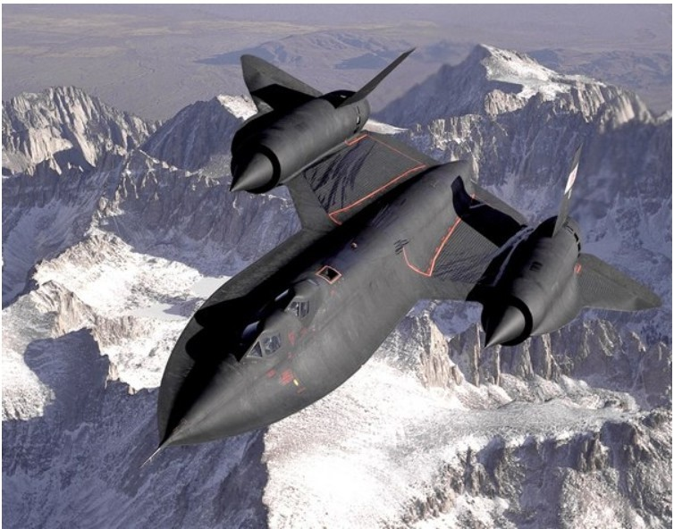

The Lockheed SR-71 "Blackbird" is a long-range, high-altitude, strategic reconnaissance aircraft developed and rnanufactured by the American aerospace company Lockheed Corporation. It 1-vas operated by both the United States Air Force (USAF) and NASA.
The SR-7,1vas developed as a black project frorn the Lockheed A-12 reconnaissance aircraft during the 1960s by Lockheed's Skunk Works division. Arnerican aerospace engineer Clarence "Kelly" Johnson was responsible for rnany of the aircraft's innovative concepts. The shape of the SR-71 ,vas based on that of the A-12, ,vhich ,vas one of the first aircraft to be designed ,vith a reduced radar cross-section. At one point, a bomber variant of the aircraft ,vas under consideration, before the progran1 ,vas focused solely on reconnaissance. Mission equipment for the reconnaissance role included signals intelligence sensors, a side-looking airborne radar, and a photo camera; the SR-71 ,vas both longer and heavier than the A-12, allo,ving it hold more fuel as well as a tvvo-seat cockpit. The SR-71 designation has been attributed to lobbying efforts by USAF Chief of Staff General Curtis LeMay, who preferred the SR (Strategic Reconnaissance) designation over sin1ply RS (Reconnaissance). The aircraft was introduced to operational service in January 1966.